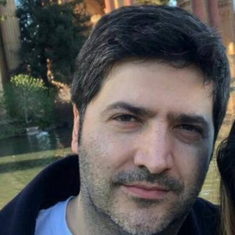

Paulo Cesar Telles de Souza
Laboratoire de Biologie et Modélisation de la Cellule, CNRS, UMR 5239, Inserm, U1293, Université Claude Bernard Lyon 1, Ecole Normale Supérieure de Lyon, 46 Allée d’Italie, 69364, Lyon, France.
Centre Blaise Pascal de Simulation et de Modélisation Numérique, Ecole Normale Supérieure de Lyon, 46 Allée d’Italie, 69364, Lyon, France.
From Mechanism to Design: Coarse-Grained and Machine-Learning Approaches to Lipid Nanoparticle Delivery
Abstract Lipid nanoparticles (LNPs) are central to the delivery of RNA-based therapeutics, yet their rational design remains challenging due to the complex coupling between composition, structure, and pH-dependent molecular interactions. Experimental approaches, while essential, are often costly and provide limited structural resolution, whereas atomistic simulations remain computationally demanding1,2.
In this talk, I will present recent advances in coarse-grained (CG) molecular dynamics simulations that provide mechanistic insight into RNA encapsulation, pH-driven structural transitions, and endosomal escape in LNPs. Using validated Martini 3 models³ together with refined lipid parameters and an expanded library of ionizable lipids, sterols, and PEGylated components4,5, these simulations reveal how different protonation states regulate lipid–RNA interactions, internal LNP organization, and membrane fusion pathways during endosomal trafficking.
Building on this mechanistic framework, I will further show how molecular descriptors extracted from CG simulations can be integrated with machine-learning approaches to predict delivery efficiency and accelerate formulation screening. Together, these multiscale and data-driven strategies enable a transition from molecular understanding to predictive design of next-generation lipid nanoparticle delivery systems.
References
1) Paloncýová, M. et al. Computational Methods for Modeling Lipid-Mediated Active Pharmaceutical Ingredient Delivery. Molecular Pharmaceutics 22, 1110–1141 (2025). 2) Kjølbye, L. R. et al. Towards design of drugs and delivery systems with the Martini coarse-grained model. QRB Discovery 3, e19 (2022). 3) Souza, P. C. T. et al. Martini 3: A general purpose force field for coarse-grained molecular dynamics. Nature Methods 18, 382–388 (2021). 4) Pedersen, K. B. et al. The Martini 3 lipidome: Expanded and refined parameters improve lipid phase behavior. ACS Central Science 11 (9) (2025). 5) Kjølbye, L. R. et al. Martini 3 Building Blocks for Lipid Nanoparticle Design. Journal of Chemical Theory and Computation 22 (2), 1069–1091 (2026).
